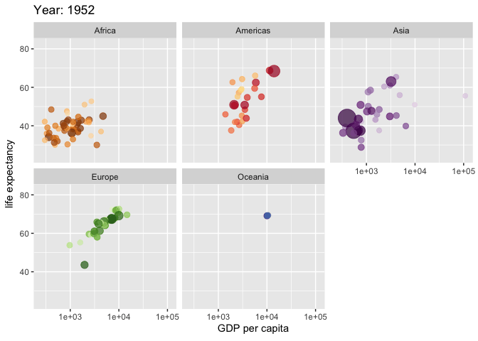

gganimate extends the grammar of graphics as implemented by ggplot2 to include the description of animation. It does this by providing a range of new grammar classes that can be added to the plot object in order to customise how it should change with time.
-
transition_*()defines how the data should be spread out and how it relates to itself across time. -
view_*()defines how the positional scales should change along the animation. -
shadow_*()defines how data from other points in time should be presented in the given point in time. -
enter_*()/exit_*()defines how new data should appear and how old data should disappear during the course of the animation. -
ease_aes()defines how different aesthetics should be eased during transitions.
An Example
All of the above might seem a bit abstract. Let’s try with a contrived example:
library(ggplot2)
library(gganimate)
ggplot(mtcars, aes(factor(cyl), mpg)) +
geom_boxplot() +
# Here comes the gganimate code
transition_states(
gear,
transition_length = 2,
state_length = 1
) +
enter_fade() +
exit_shrink() +
ease_aes('sine-in-out')
Here we take a simple boxplot of fuel consumption as a function of cylinders and lets it transition between the number of gears available in the cars. As this is a discrete split (gear being best described as an ordered factor) we use transition_states and provides a relative length to use for transition and state view. As not all combinations of data is present there are states missing a box. We define that when a box appears it should fade into view, whereas at should shrink away when it disappear. Lastly we decide to use a sinusoidal easing for all our aesthetics (here, only y is changing)
Installation
gganimate is available on CRAN and can be installed with install.packages('gganimate'). If you wish to install the development version you can install directly from github using devtools:
Yet Another Example
It is impossible to cover everything possible with gganimate in a README, but animations are fun, so let’s at least have one more:
library(gapminder)
ggplot(gapminder, aes(gdpPercap, lifeExp, size = pop, colour = country)) +
geom_point(alpha = 0.7, show.legend = FALSE) +
scale_colour_manual(values = country_colors) +
scale_size(range = c(2, 12)) +
scale_x_log10() +
facet_wrap(~continent) +
# Here comes the gganimate specific bits
labs(title = 'Year: {frame_time}', x = 'GDP per capita', y = 'life expectancy') +
transition_time(year) +
ease_aes('linear')
In this example we see the use of transition_time() which can be used with continuous variables such as year. With this transition it is not necessary to provide transition and state length as the “transition variable” provides this directly (e.g. it should take twice as long to transition between 1980 and 1990 compared to 2000 to 2005). We also see the use of string literal interpolation in titles. gganimate lets you specify variables to evaluate inside titles and different transitions provide different type of information to use.
Where is my animation?
gganimate mimics the way ggplot2 renders its output, in that the rendering is done automatically when the gganim object is printed. Under the hood, the animate() function is called which renders the frame and passes the frames to a renderer functions which takes care of combining them to the final animation. The default renderer is gifski_renderer() which returns a gif_image object which is a simple wrapper around a path to a gif file. If animate() has been called implicitly as part of print the gif_image object is available using the last_animation() function (analogous to ggplot2::last_plot()). In order to save the animation to a specific location, you can use the anim_save() function which, like ggplot2::ggsave, defaults to taking the last rendered animation and writes it to a file.
I don’t like gifs…
gif is a fantastic format for animations due to its wide support, but sometimes another format is required. gganimate is agnostic to the renderer and while the default is to use gifski to combines the frames into a gif, it doesn’t have to be so. By passing an alternate renderer to the animate() function you can control the animation format, and gganimate comes with a bunch (and you can write your own). To create video files you can e.g. use the ffmpeg_renderer():
p <- ggplot(airquality, aes(Day, Temp)) +
geom_line(size = 2, colour = 'steelblue') +
transition_states(Month, 4, 1) +
shadow_mark(size = 1, colour = 'grey')
animate(p, renderer = ffmpeg_renderer())Video output are automatically embedded in RMarkdown documents, but GitHub strips video when rendering READMEs so you can’t see it here
Further there’s support for rendering to sprite sheets if that is your vice.
Old API
This is the second iteration of the gganimate package. The first, developed by David Robinson had a very different API, and relied on specifying animation frame membership inside aes() blocks in the geom_*() calls. This approach was easy to grasp, but essentially limited in capabilities and has thus been abandoned for a more thorough grammar.
Code written for the old API will not work with this gganimate version and there will not come a future support for it. If you wish to continue using the old API then avoid upgrading gganimate. If you’ve already upgraded and wish to downgrade, the latest version of the old API is available as a GitHub release.
If you wish to convert your old animations to the new API, the closest you get is probably with transition_manual, even though it is not completely substitutable: